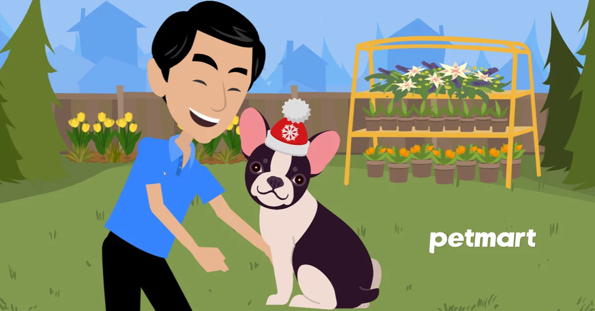
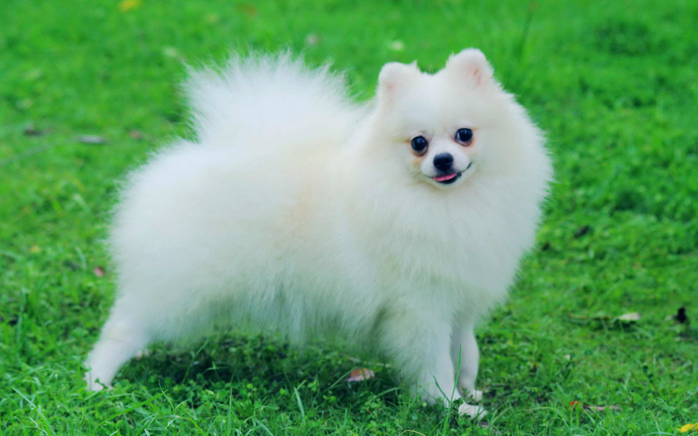
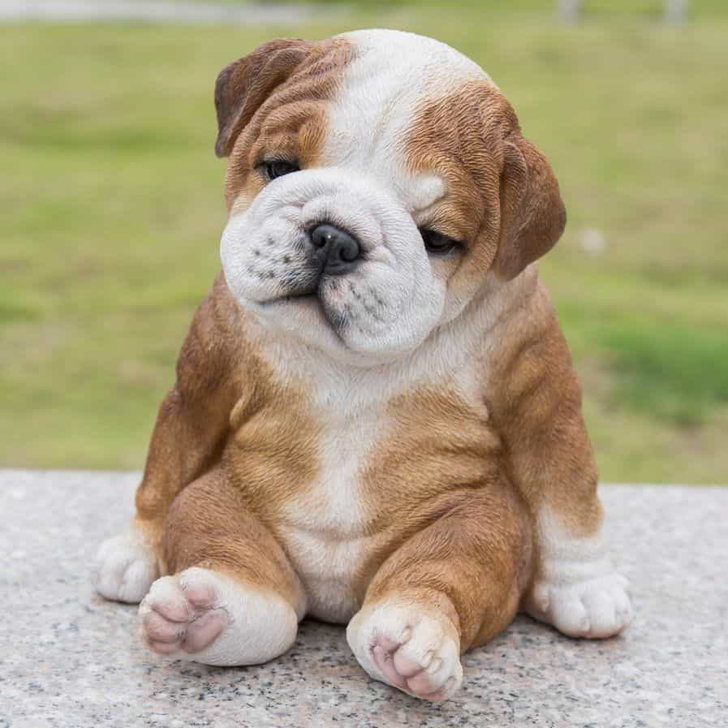

Kinh nghiệm nuôi chó dành cho người mới bắt đầu
By T2104-E
Nắm rõ kinh nghiệm nuôi chó thì mới có thể giúp cho chú cún của bạn khỏe mạnh. Không phải bạn cứ ra cửa hàng chọn một em nhanh nhẹn về và cho ăn thật nhiều, tắm sạch sẽ là được. Vậy phải làm thế nào? Bài viết này Pet's Family T2104-E sẽ chia sẻ với các bạn một số kinh nghiệm nuôi chó cần thiết trước khi đón chúng về nhà mới.
Lựa chọn địa chỉ mua chó cảnh tin cậy.
Tốt nhất mua chó của chủ nuôi có chó mẹ ở nhà đẻ. Hoặc trực tiếp nhập về có nguồn gốc, lý lịch rõ ràng. Đó là những bé nhanh nhẹn, khoẻ mạnh, có “sổ sức khoẻ” đi kèm dán tem các loại vaxin đã tiêm phòng cho chó và ngày tẩy giun cho chó định kỳ. Theo những người có kinh nghiệm nuôi chó, chó con dưới 2 tháng tuổi vẫn phụ thuộc nhiều vào mẹ. Nếu tách đàn quá sớm sẽ rất khó để chăm sóc chúng. Bạn nên mua chó con trên 2 tháng tuổi nhanh nhẹn và hoạt bát. Chó con ở độ tuổi này sẽ dễ nuôi và ổn định hơn. Trước tiên là chúng đã có thể tách mẹ và cai sữa. Việc ăn dặm đã ổn định, chó con bắt đầu làm quen với thức ăn cho chó ngoài sữa mẹ. Cơ thể cũng đã dần ổn định hơn. Chó con ở giai đoạn này cũng chưa hình thành tính cách. Do đó bạn có thể dễ dàng huấn luyện chúng làm theo ý bạn. Chó đã lớn thường quen thuộc với môi trường cũ. Khi sang nơi ở mới, chúng sẽ rất khó để hòa nhập một lần nữa. Hiện nay có nhiều trại chó cảnh Husky, Bull Pháp, Rottweiler, Poodle, Alaska, Phốc sóc, Becgie… uy tín. Bạn có thể tham khảo trên website hoặc nhờ những người có kinh nghiệm nuôi chó để nhờ họ kiểm tra giúp.
Kinh nghiệm nuôi chó khi mới về nhà
Kiểm tra sức khoẻ
Bạn nên đưa chó đến bác sĩ thú y có kinh nghiệm khám sức khoẻ tổng thể và trực tiếp tư vấn cách chăm sóc cho cún của bạn. Có thể yêu cầu bác sĩ cấp sổ khám bệnh nếu chưa có để tiện theo dõi.Chuẩn bị chỗ ở của chó
Theo kinh nghiệm nuôi chó của nhiều người, chỗ ở cho cún cần thoáng mát, ấm, có đủ không khí. Không nên cho cún nằm điều hoà và nằm trước quạt vì như vậy cún rất dễ có khả năng bị nhiễm lạnh, ho. Tránh để chó cún ở vị trí cao như cửa sổ, ban công, cầu thang…Tắm cho chó
Khi vừa mua cún về bạn không nên tắm cho cún bằng nước ngay. Nếu thấy cún hôi có thể tắm khô. Nếu tắm ngay, cún rất dễ có khả năng bị viêm phổi và kế phát sang các bệnh truyền nhiễm nguy hiểm. Những đêm đầu tiên xa mẹ, xa chủ cũ chó con có thể kêu sủa. Bạn hãy âu yếm vuốt ve để cún con yên tâm trong vòng tay bạn.
Kinh nghiệm nuôi chó trong việc chăm sóc sức khỏe
Đối với từng giai đoạn phát triển sẽ có những chế độ chăm sóc khác nhau. Nên bổ sung thêm bột dinh dưỡng cho chó để thú cưng luôn đầy đủ dưỡng chất cần thiết.- Dưới 2 tháng tuổi: cho ăn 6 lần/ngày, mỗi lần cách nhau 3 – 5 giờ.
- Từ 2 – 4 tháng: cho ăn 5 lần/ngày, mỗi lần cách nhau 4 giờ
- Từ 4 – 6 tháng: cho ăn 4 lần/ngày.
- Từ 6 – 10 tháng: cho ăn 3 lần/ngày.
- Từ 10 tháng trở lên: cho ăn 2 lần/ngày như đối với chó lớn.
Lưu ý trong chăm sóc y tế cho chó con
- Đối với chó dưới 6 tháng tuổi: nên dùng thuốc tẩy giun cho chó ngay sau khi được 1 tháng tuổi. Sau đó mỗi tháng tẩy lại 1 lần cho đến khi được 6 tháng tuổi
- Đối với chó trên 6 tháng tuổi: nên tẩy giun 3 – 4 tháng một lần
Đồ dùng cho chó cực kì cần thiết phải có
Vòng cổ, bảng tên cho chó
Vòng cổ chó và bảng tên cho chó là vô cùng cần thiết. Bảng tên có ghi số điện thoại của bạn đeo vào vòng cổ của cún ngay khi bạn đón nó về nhà giúp an toàn cho thú cưng khi bạn đưa nó về. Trong trường hợp cún con đi lạc bạn sẽ có thêm cơ hội để tìm thấy chúng.Bàn chải và kem đánh răng cho chó
Theo những người có kinh nghiệm nuôi chó, cần chú ý mua sản phẩm dành riêng cho thú cưng, không dùng đồ của người cho chó. Cố gắng tìm bàn chải có 2 đầu to và nhỏ để tiện sử dụng. Ngay cả khi chó trưởng thành cũng vậy. Kem đánh răng chó chuyên dụng có thể nuốt mà không gây nguy hiểm với cún cưng. Đánh răng cho chó mỗi ngày sẽ cún cưng tránh được các bệnh về răng miệng.Chăm sóc chó bằng lược chải lông
Cún cưng cần dùng loại lược có răng to và răng mảnh nhỏ. Khi tìm mua cần lựa chọn loại có đầu răng và mặt cắt loại tròn. Mục đích là vì để tránh làm rách da, làm tổn hại đến da của chó. Đối với chó lông dài, lược răng to là dùng để chải tầng lông bên ngoài. Giúp chải mượt những lông kết dính với nhau. Lược răng mảnh nhỏ dùng để chải tầng lông bên trong. Lược chải lông chó là một công cụ thiết yếu dùng để xử lý lông bị rối, nhưng chỉ có thể sử dụng khi lông không bị kết dính vào nhau.Kéo, kìm cắt tỉa móng chân cho chó
Ngoài dùng lược chải lông, bạn còn cần sử dụng một công cụ khác cũng rất quan trọng trong việc chăm sóc thú cưng là kéo cắt tỉa lông chó . Kéo có nhiều kiểu nhiều loại nhưng chỉ những chuyên gia thẩm mỹ làm đẹp cho thú cưng mới cần dùng đến, chủ nhân bình thường chỉ cần chuẩn bị kéo cắt loại thường và cắt móng chân cho chó là đủ. Tốt nhất nên chọn loại kéo có đầu tròn, tránh bất cẩn làm thương đến da của cún cưng. Công dụng của kéo là dùng để cắt lông xung quanh mắt, tai, miệng, hậu môn và cơ quan sinh dục, đế chân. Cắt móng chân cho chó thường tránh để tạo ra âm thanh quá lớn. Những người có kinh nghiệm nuôi chó cho biết, chó con rất nhạy cảm với âm thanh. Nhất là khi âm thanh phát ra khi chạm vào chân chúng. Khi đã có ấn tượng chúng sẽ sợ hãi, bạn cần vuốt ve, an ủi để chúng đỡ sợ. Chủ nhân cần cắt móng định kỳ cho chúng.Tông đơ cắt lông chó
Tông đơ cắt lông chó dùng để làm sạch lông, đặc biệt là phần mông, có những lúc xuất hiện lông quăn. Cắt tỉa những phần lông rối, lông thừa cho gọn. Đồng thời có thể sử dụng để cạo lông máu cho một số giống chó nhỏ như Poodle, cạo lông khi vùng da chó bị bệnh… Trước khi sử dụng, bạn nên tham khảo ý kiến từ những người có kinh nghiêm nuôi chó trước đó.Túi vận chuyển chó
Những chú chó không thể luôn luôn ở trong nhà. Đôi khi bạn cần đưa cún con đi dạo, đi chơi hay đi spa tắm, cắt tỉa lông. Bạn có thể sử dụng túi xách, địu và balo vận chuyển…chuyên dụng. Những chiếc túi vận chuyển chó làm từ vải, da rất bền và dễ vệ sinh. Với đồ dùng này bạn và cún cưng có thể đi cùng nhau tới tất cả mọi nơi.Rọ mõm cho chó
Những chú cún cũng cần được bảo vệ bởi những chiếc rọ mõm khi đi ra ngoài. Điều này sẽ giúp cho chú cún không ăn những thức ăn lạ và nguy hiểm. Đồng thời việc sử dụng rọ mõm cho chó còn giúp bạn bảo vệ cộng đồng xung quanh. Tránh nguy cơ chú chó của bạn có thể cắn bậy và tấn công những người lạ mà chúng gặp
Kinh nghiệm nuôi chó trong việc ăn uống
Cho chó ăn đủ dinh dưỡng, đủ chất
Cách chăm sóc chó tốt nhất là không nhất thiết phải cho chúng đồ ăn ngon. Đủ chất và đủ dinh dưỡng là được. Không được để chó bị đói hoặc quá no. Đặc biệt là chó con, chúng sẽ ăn theo kiểu cho bao nhiêu ăn hết bấy nhiêu. Nên cân đối liều lượng cho hợp lý. Khuyến khích cho chó ăn thức ăn khô để tránh bị đau bụng và đủ chất nhất. Bạn cũng có thể thay đổi khẩu vị cho chúng bằng cách trộn thêm pate, nước sốt để bữa ăn ngon miệng hơn. Tuyệt đối không cho chó ăn socola. Socola rất nguy hiểm, có thể gây tử vong cho chó. Hạn chế không cho ăn kẹo, bánh đồ ngọt. Nếu chúng có hứng thú với đồ ăn vặt, bạn nên mua bánh thưởng cho chúng thưởng thức. Chó rất thích gặm xương. Tuy nhiên xương gà, vịt.. ở dạng thô lại hết sức nguy hiểm. Mảnh vụn xương có thể làm rách ruột, dạ dày. Nếu cho chó ăn cá thì phải gỡ sạch sẽ xương ra tránh bị hóc. Khẩu phần ăn uống phải đầy đủ chất dinh dưỡng và năng lượng. Bao gồm Protein, chất béo, tinh bột, khoáng chất và vitamin. Không nên lạm dụng thuốc hoặc thức ăn tổng hợp. Rất lưu ý không cho ăn quá nhiều sữa cho chó con , cá tanh, mỡ, ăn quá mặn. Đặc biệt không cho chó ăn phổi, gan bò lợn vì gan có chứa nhiều độc chất dễ gây ung thư. Tốt nhất hãy cho cún ăn ruốc thịt hoặc cháo thịt không mỡ. Hãy đảm bảo rằng chú chó của bạn được cho ăn đầy đủ các bữa.Cho chó ăn uống khoa học
Cho cún con ăn khoảng 3 – 4 bữa ngày. Chỉ cho ăn gần no thì dừng. Không để sẵn đồ ăn chó lúc nào thích ăn thì ăn. Nước uống sạch và luôn đầy đủ. Dụng cụ cho ăn như bát, đĩa… phải luôn rửa sạch sẽ, khô ráo. Nếu bạn muốn thay đổi đồ ăn cho chó sang một loại khác, hãy chờ sau khoảng một tuần. Bạn nên bắt đầu bằng việc thêm một phần thức ăn mới với ba phần thức ăn cũ. Sau đó chuyển sang một nửa cũ và một nửa loại mới. Sau dần là một phần đồ ăn cũ và ba phần mới cho đến khi chuyển hẳn sang loại mới. Chó con rất thích gặm, mài răng, rất hay cắn nát giày dép… không những hỏng đồ mà còn ăn nuốt gây độc và viêm tắc đường tiêu hóa. Bạn nên để chó tránh xa các thứ này. Hãy tìm mua những cục xương gặm canxi, đồ chơi dành riêng cho chó tại Pet Mart để ngăn chặn vấn đề này. Khi thấy chó có những biểu hiện khác thường: nôn, bỏ ăn, buồn rầu, tiêu chảy, nghi ốm, phải ngừng cho ăn hoặc uống sữa. Nên mời bác sĩ thú y tới để kiểm tra.
Những thức ăn cấm kỵ đối với chó
Có một số loại thức ăn nguy hiểm cho chó được chia sẻ từ những người có kinh nghiệm nuôi chó lâu năm. Bạn nhất định không được cho cún con ăn hoặc hạn chế nhất có thể. Thức ăn nóng, lạnh, đồ ăn cay, mặn, đồ ăn ngọt, các đồ hun khói. Các loại cá nước ngọt. Chỉ nên cho ăn các loại cá biển đã nấu chín. Không nên cho chó ăn quá nhiều mì, các loại đậu, bánh mỳ trắng, khoai tây… Không được cho chó ăn thịt mỡ lợn, cừu, trứng gà sống. Trong thức ăn chó không nên cho các loại gia vị như ớt, sốt cà chua cay, hạt tiêu… Không cho chó ăn các loại thực phẩm ôi thiu, quá hạn sử dụng. Nhất quyết không được cho chó ăn các loại xúc xích, giò… bởi vì các loại thực phẩm này rất độc hại đối với chó. Chúng làm hỏng gan và có thể làm cho chó chết ngay trước khi trưởng thành Không nên cho chó ăn xương. Lý do đầu tiên là do chúng không thể tiêu hóa hấp thụ được. Thứ 2 là xương có thể gây nên chứng táo bón, tắc ruột…Đặc biệt nguy hiểm là các loại xương ống. Nhất là những loại như xương gà, có thể vỡ ra thành những mảnh sắc nhọn chọc thủng ruột. Không được cho chó ăn các sản phẩm ngọt, nhất là các loại kẹo. Đồ ngọt làm mất đi sự ngon miệng và phá vỡ quá trình tiêu hóa. Ngoài ra chúng còn làm hỏng men răng và có ảnh hưởng xấu đến mắt (làm chảy nước mắt).
Cách chăm sóc lông cho chó
Đối với những dòng chó có bộ lông dài và dày như Husky, Alaska, Samoyed bạn cần chăm sóc lông cho chúng thường xuyên. Tắm thường xuyên với sữa tắm dành riêng cho chó . Đừng quên chải lông thường xuyên cho chó để phòng trừ ký sinh trùng bán trên da và lông. Ve, rận, bọ chét chó mèo có thể bám lên ra hút máu và làm tổn thương da của cún cưng. Tình trạng chó bị rụng lông cũng nhiều hơn bình thường. Nếu bạn chưa có kinh nghiệm nuôi chó và cách chăm sóc lông cho thú cưng, có thể sử dụng các dịch vụ spa tắm và cắt tỉa lông chó. Đặc biệt là chó con mới nuôi. Sau khi chó con cứng cáp bạn có thể tự tắm cho cún ngay tại nhà. Để phòng chống sự tấn công của ký sinh trùng bạn cũng nên cho chúng hạn chế tiếp xúc với chó mèo lạ. Sử dụng vòng cổ chống rận để đảm bảo an toàn. Trong trường hợp chó cưng bị ve rận bạn có thể mua thuốc trị ve rận cho chó đặc trị. Đây đều là những sản phẩm an toàn và tốt cho vật nuôi.